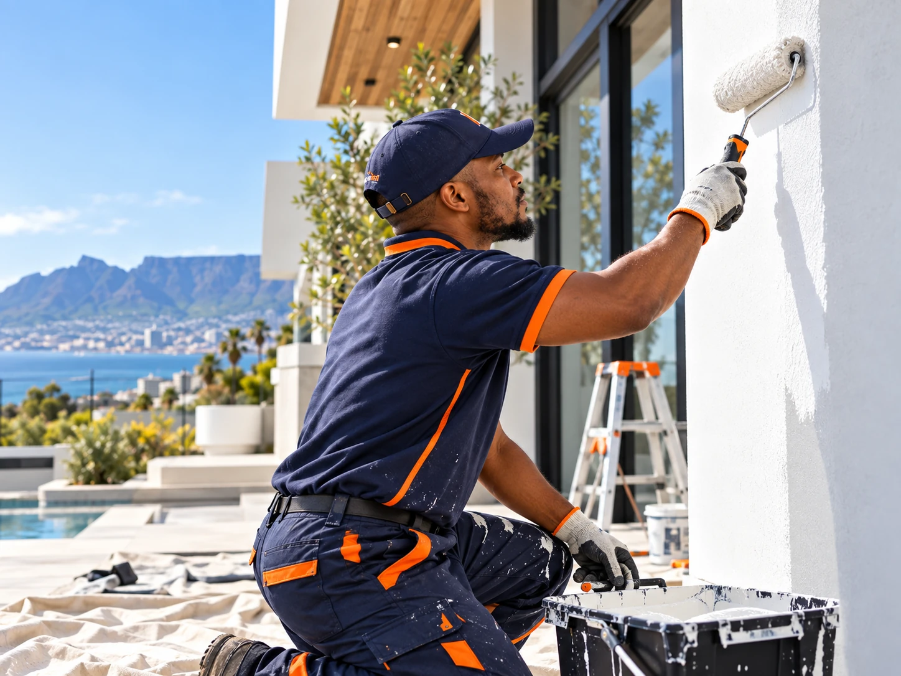

Painting services
Prep first. Finish better.
Interior and exterior painting for Cape Town properties, with attention to surface preparation, edges, coverage and a clean final handover.

Interior & exterior
The quality is in what happens before the last coat.
A neat finish depends on cleaning, patching, sanding, masking, priming where required and applying the right coating for the surface.
✓
Walls & ceilings
Refreshes, colour changes and new finishes.
Refreshes, colour changes and new finishes.
✓
Trim & detail
Doors, skirtings, frames and neat cutting-in.
Doors, skirtings, frames and neat cutting-in.
✓
Exterior surfaces
Preparation and painting for exposed walls and features.
Preparation and painting for exposed walls and features.
✓
Patch & prep
Minor repair preparation before painting.
Minor repair preparation before painting.

Clean lines. Even coverage. Proper preparation.
Painting workflow
A finish you can inspect closely.
01
Assess
Check condition, surfaces, colours and access.
02
Protect
Mask and cover areas that are not being painted.
03
Prepare & paint
Patch, sand, prime where needed, then apply the finish system.
04
Inspect
Complete touch-ups, clean edges and hand over the area.